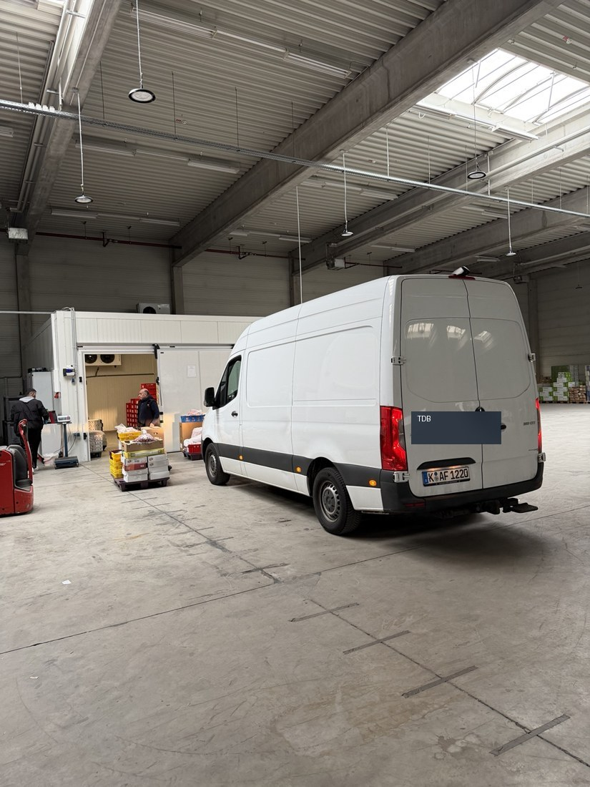

Seit 2013 Erfahrung im Fleisch- und Lebensmittelgroßhandel. Aus Köln für Gastronomie, Handel und Großverbraucher in ganz NRW.
TDB Food – Meat & More versorgt Restaurants, Imbisse, Lebensmittelmärkte, Grillhäuser, Caterer und Großküchen mit frischen Produkten. Unser Fokus liegt auf Halal-Qualität, schneller Abstimmung und zuverlässiger Belieferung.

Wir achten auf frische Ware, saubere Lagerung und zuverlässige Lieferketten.
Kurze Wege, persönliche Ansprechpartner und schnelle Bestellungen per WhatsApp.
Eigene Kühlfahrzeuge sorgen für termingerechte Lieferungen an unsere Kunden.